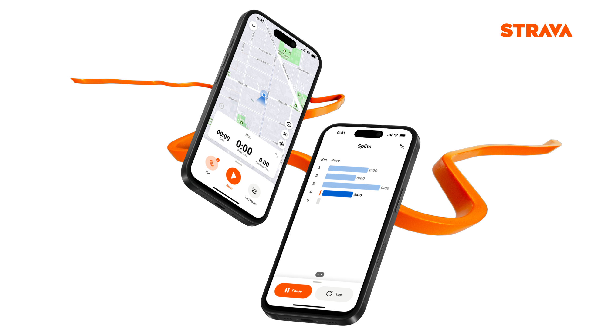
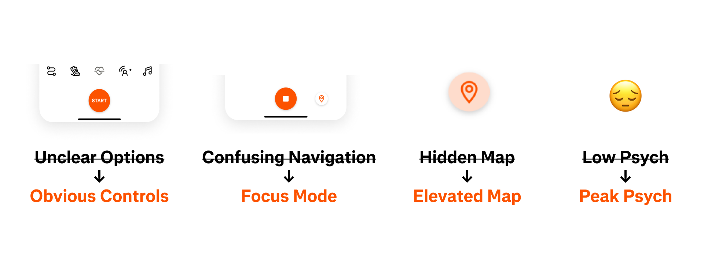
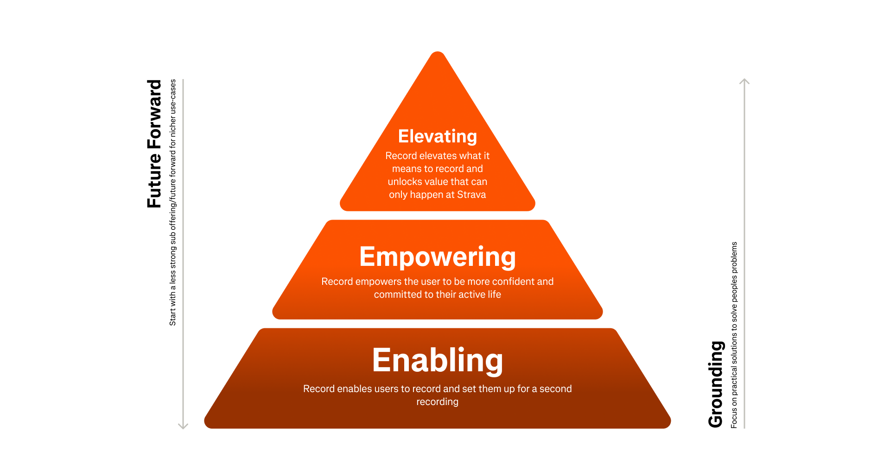
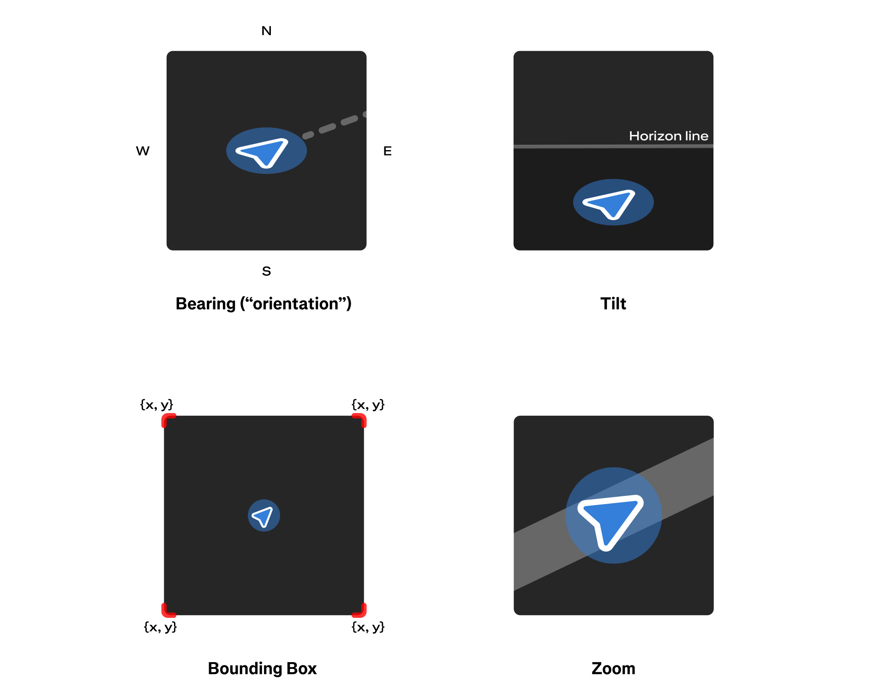
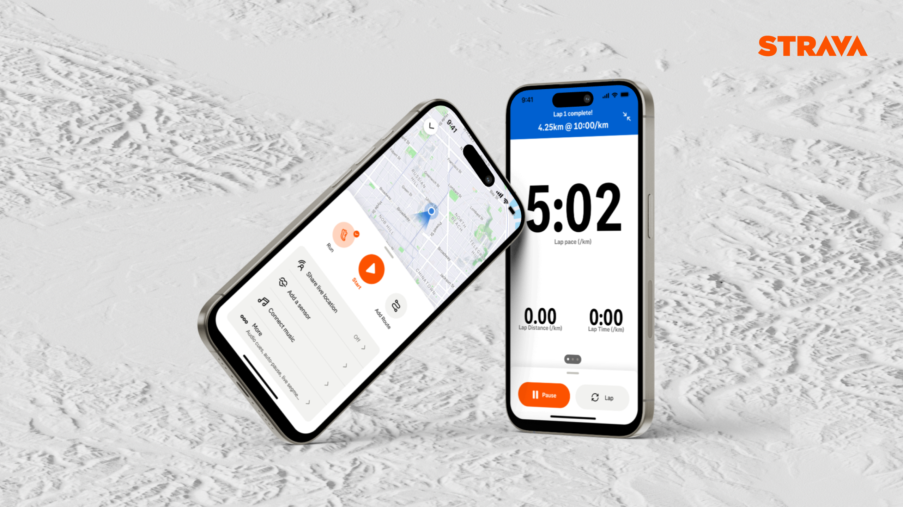

Strava’s mobile record experience drives 80% of first uploads, yet it was failing to bring people back for a second workout. The design felt dated, the map underperformed, and the tech stack made improvements risky. I led a complete redesign of the record flow, creating a modern interface and robust mapping system that better supports new audiences and long-term product growth.
2025 • Strava • Lead Designer
80% of first uploads happen on mobile. Sounds great… except mobile recorders are twice as likely to ghost us after their first activity. Not ideal.
The old interface was a mess of hidden options, outdated code, and a map that was impossible to find. With nearly every activity tied to GPS, it was clear: the record experience needed a full rebuild, map-first.

I set up a scalable design system and usability principles so we could stop duct-taping fixes and start designing for growth. By digging into user data, rapid prototyping, and a lot of testing, I zeroed in on the friction points and built solutions that we could actually iterate on — safely this time.

During this time I pushed to learn a new prototyping tooled called Play, complete with a working map, so testers could feel like they were recording a real workout. That native feel was critical — no smoke, no mirrors, just honest feedback while we tested with users in motion, on runs (I have the activities to prove it).
The legacy map stack had to go in favor of our own mapping stack (thanks FATMAP!). We swapped in advanced mapping tech to unlock features like 3D views and orientation modes. The challenge wasn’t “can we add cool maps?” — it was making sure controls felt intuitive for every use case, from Sunday walkers to marathoners.

We saw conversion bumps for new users across the board: +2.82% on Android, +1.52% on iOS, with the biggest gains in new expansion markets. More importantly, we built a flexible, modern system that will keep Strava iterating (and experimenting) for years — without the fear of the whole thing crumbling.
